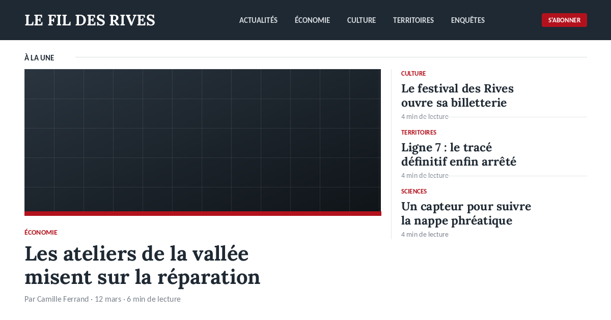
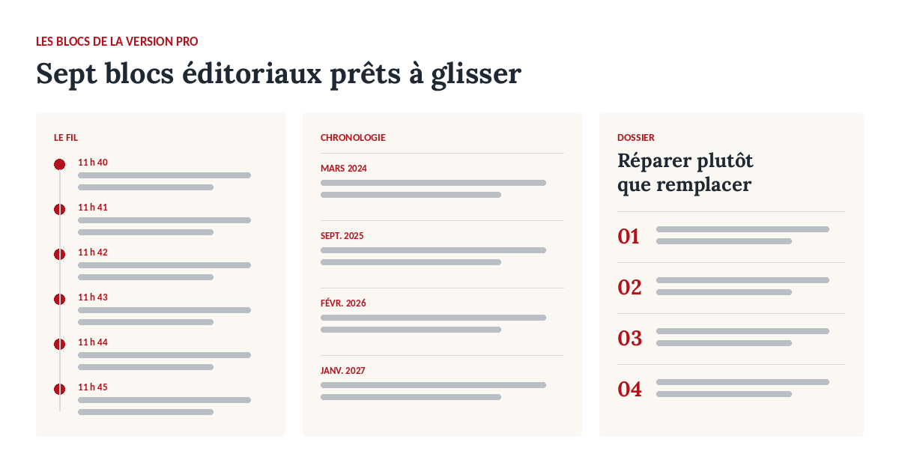
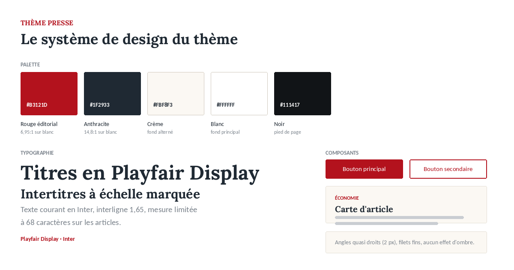

Article avec sommaire et mode lecture
Le sommaire à gauche et le bouton de mode lecture sont ajoutés aux articles du blog sans remplacer la vue d'Odoo.


Un article principal et quatre secondaires, avec la hiérarchie typographique qui va avec. C'est le bloc qui fait qu'une page d'accueil ressemble à un journal.
Une colonne d'entrées horodatées, à poser en page d'accueil ou sur une page dédiée au direct.
Des boutons de rubrique filtrent la grille sans rechargement de page. Aucune configuration : la rubrique est un attribut de la carte.
Une liste numérotée pour présenter une enquête en plusieurs épisodes.
Le bloc de signature à placer en fin d'article ou en tête de page auteur.
Une frise date/contenu pour reprendre le fil d'une affaire ou d'un projet.
Un gabarit d'inscription à relier au module Newsletter d'Odoo ou à votre outil d'envoi.
Le sommaire des intertitres se construit dans le navigateur à partir des h2 et h3 réellement présents. Rien à saisir.
Un bouton qui élargit l'interligne, réduit la mesure et masque la colonne latérale.
Une inversion complète des couleurs, activable par un bouton à poser dans la page ou automatiquement selon la préférence système du visiteur. Le choix est mémorisé dans le navigateur. Contrastes du thème sombre vérifiés au niveau AA.
Fil d'actualité, chronologie et dossier. Tous se glissent depuis la catégorie « Presse » du panneau de blocs.

Le sommaire à gauche et le bouton de mode lecture sont ajoutés aux articles du blog sans remplacer la vue d'Odoo.
Palette, échelle typographique et composants. Les ratios de contraste indiqués sont ceux mesurés sur les couples de couleurs livrés par défaut.

En-tête de rubrique, grille filtrable et bandeau newsletter, créée à l'application du thème sur /rubrique-economie.
Encadré auteur et liste des derniers articles, sur /auteur-camille-ferrand.
Une troisième palette à fond crème dominant s'ajoute aux deux palettes de la version gratuite.
Édité par DYONYSOS — conseil et développement Odoo.
Support et questions avant achat :
welcome@dyonysos.fr
https://dyonysos.fr
Toutes les images de démonstration sont générées par programme (dégradés, formes géométriques, compositions typographiques) : aucune photographie ni illustration tierce n'est incluse. Les contenus de démonstration sont fictifs.